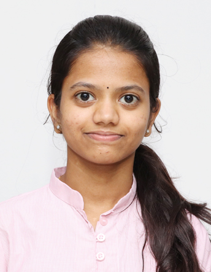

Vyshnavi Peerala
Software Engineer

Summary
Dedicated and results-driven web developer with close to 2 years of hands-on experience in designing and developing
dynamic, user-friendly websites. Proficient in JavaScript, HTML, and CSS, with a strong foundation in Python and C
languages. Adept at collaborating with cross-functional teams to deliver high-quality web solutions that exceed client expectations. Passionate about staying up-to-date with the latest web technologies to drive innovation and enhance user experiences.
Work Experience
Software Enginner - HCL Tech
March 2023 - September 2023
- Worked on developing Web and Mobile Applications for CREDEM
bank (Italiyan Payments).
- Developed the UI of the web and mobile applications. Implemented
functionalities of the applications using JavaScript, HTML, CSS and
Quantum Visualizer framework.
- Fixed bugs in the web and mobile applications and improved the quality of the applications
- Unit tested the implemented functionality after it is developed to
ensure the application to ensure high-quality Web Applications.
Associate Product Engineer - Temenos India Pvt.Ltd
October 2022 - February 2023
- Worked on building web and android applications for CWB
(Canadian Western Bank), a leading bank in Canada.
- Resolved Bugs and implemented Software features. Also worked on client mobile application bugs in android and iOS
- After developing the UI and implementing functionalities, performed Unit Testing to ensure proper functioning.
Software Engineer - Temenos India Pvt.Ltd
March 2022 - August 2022
- Worked on building web and android app front-end development using Quantum Visualizer framework as intern
- Performed Unit testing after developing the application to ensure proper functioning.
- Had Hands-on experience of Developing Web applications using
Javascript, HTML and CSS
Education
- B-Tech, EEE - Sreenidhi Institute of science and Technology
- 2018 - 2022
- Secured 8.41 CGPA
- Intermediate, MPC - Urbane Junior College
- 2016 - 2018
- Secured 97.3%
Skills
- JavaScript : ★★★★★
- HTML : ★★★★★
- CSS : ★★★★★
- Responsive Web Development : ★★★★
Personal Projects
Web Design Agency Website
- This project involved creating a visually captivating layout, structuring
content, and incorporating interactive elements. Employed HTML for content presentation and CSS for responsive design, resulting in an
attractive and user-friendly web presence.
Mondrian Painting Recreation
- This project showcases proficiency in HTML and CSS for artistic expression
and attention to detail in recreating complex visual compositions, reflecting
both technical and creative skills in web development
Portfolio Websit
- Designed and developed a personal portfolio website from scratch using
HTML. The website showcases professional achievements, skills, and
previous projects, creating an online presence for showcasing work and
skills.
Other